1. Registrácia
Prístup do neverejnej časti ISPO vyžaduje registráciu určených zamestnancov vykonávateľa zapojených do implementácie POO. Zamestnanci sa môžu do systému registrovať prostredníctvom Žiadosti o registráciu konta v ISPO na adrese https://is.planobnovy.sk/registracia.
Pri vypĺňaní žiadosti o vytvorenie konta je potrebné zvoliť jedno z nasledujúcich zaradení:
-
Nový zamestnanec - počiatočná pozícia pridelená novému používateľovi systému, ktorá umožňuje len základné zobrazenie údajov. K tomuto zaradeniu môže byť neskôr pridelená príslušná pracovná pozícia podľa kapitoly 2).
-
Administrátor vykonávateľa (v ISPO ako Admin VIR) - je zodpovedný za priraďovanie pracovných pozícií zamestnancom orgánu a resetovanie hesiel. Zároveň slúži ako technický kontakt pre Centrum podpory ISPO.
Po vyplnení registračného formuláru žiadosti o registráciu konta je potrebné vygenerovanú žiadosť vo formáte PDF vytlačiť a podpísať žiadateľom a oprávnenou osobou (štatutárom) a následne zamestnanec s pracovnou pozíciou Admin VIR zašle sken žiadosti emailom na adresu: ispo_is@vicepremier.gov.sk
V prípade skončenia pracovného pomeru je používateľ, respektíve jeho zamestnávateľ, povinný bezodkladne oznámiť túto skutočnosť Centru podpory ISPO na adrese ispo_is@vicepremier.gov.sk. Používateľ je zároveň povinný bezodkladne oznámiť správcovi systému akékoľvek ďalšie skutočnosti, ktoré by mali vplyv na informácie uvedené v žiadosti o registráciu a oprávnenosť prístupu do systému. Zmena prístupových údajov si vyžaduje opätovné zaslanie žiadosti o registráciu.
1.1) Postup registrácie na neverejnú časť ISPO
1.1.1) Po kliknutí na registračný odkaz sa zobrazí Žiadosť o registráciu konta v ISPO. Vyplníme požadované údaje a zo zoznamu vyberieme orgán, pod ktorým sa chceme registrovať.
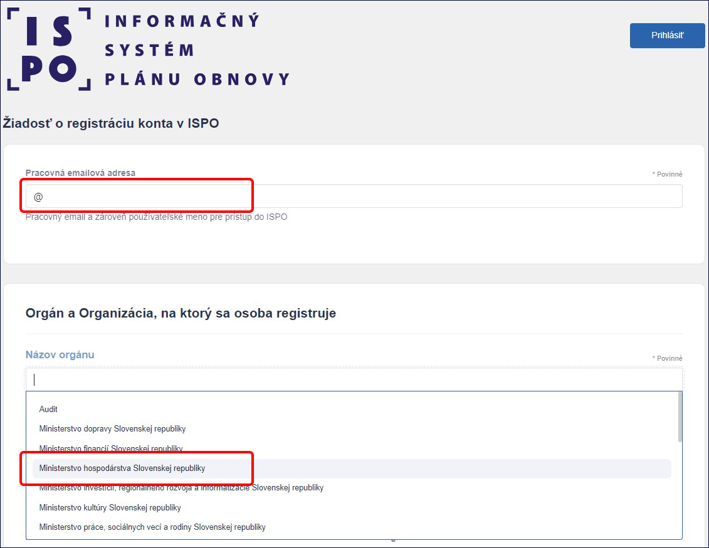
1.1.2) V poli Zaradenie vyberieme možnosť Zamestnanec. V poli Pracovné pozície vyberieme relevantnú pracovnú pozíciu, v prípade bežného zamestnanca pozíciu Nový zamestnanec a v prípade administrátora pozíciu Admin VIR.
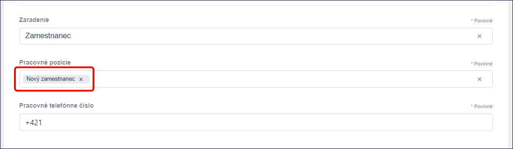
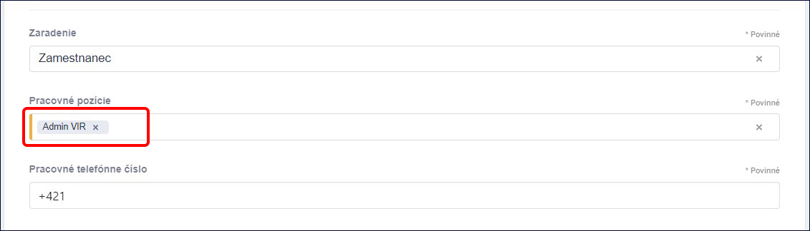
1.1.3) V časti Identifikácia žiadateľa môžeme okrem mena a priezviska uviesť aj titul. Dôležité je uviesť rodné číslo (bez lomítka), bez ktorého nie je možná registrácia. Nie je potrebné uvádzať dátum narodenia. Dátum narodenia uvádzajú len osoby, ktoré nedisponujú rodným číslom.
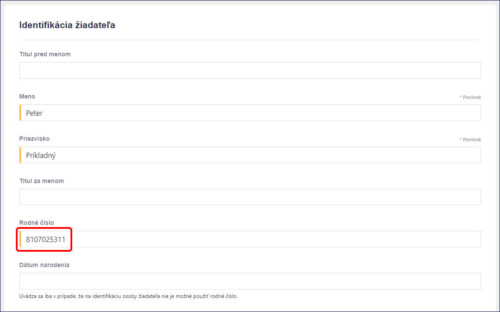
1.1.4) Po vyplnení všetkých relevantných údajov klikneme na tlačidlo Odoslať žiadosť o registráciu v spodnej časti obrazovky.
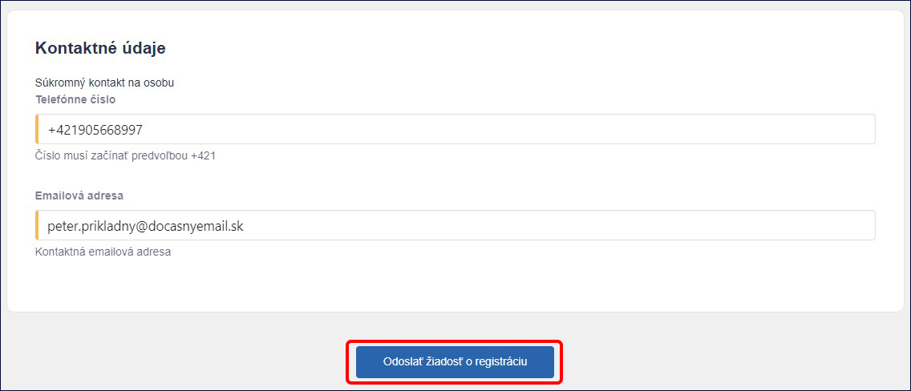
1.1.5) Na zadanú e-mailovú adresu príde e-mail s názvom „ISPO: Zaevidovanie žiadosti o registráciu konta v ISPO“. Vygenerovanú žiadosť vo formáte PDF je potrebné vytlačiť a podpísať žiadateľom a oprávnenou osobou (štatutárom) a následne zamestnanec s pracovnou pozíciou Admin VIR zašle sken žiadosti emailom na adresu: ispo-is@vlada.gov.sk
1.1.6) Po spracovaní žiadosti Centrom podpory ISPO príde na zadanú e-mailovú adresu e-mail s názvom „ISPO: Vytvorenie hesla“. Klikneme na tlačidlo Vytvoriť heslo. V internetovom prehliadači sa otvorí nové okno, ktoré nás presmeruje na neverejnú časť ISPO.
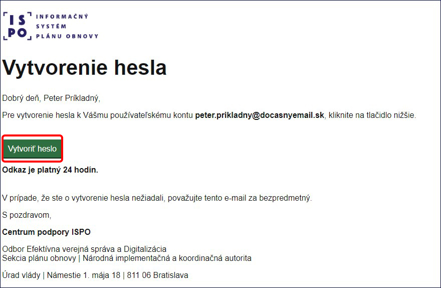
Poznámka: Ak nestihneme vytvoriť heslo v danom časovom limite, kontaktujeme Admina VIR príslušného rezortu so žiadosťou o reset hesla (Admin VIR má potrebné oprávnenie). V prípade potreby je možné kontaktovať aj Centrum podpory ISPO.
V neverejnej časti ISPO klikneme na tlačidlo Zmeniť heslo.
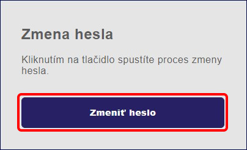
Vytvoríme heslo, ktoré má aspoň 12 znakov a obsahuje aspoň jedno veľké písmeno, jedno malé písmeno, jednu číslicu a jeden špeciálny znak. Opäť klikneme na tlačidlo Zmeniť heslo.
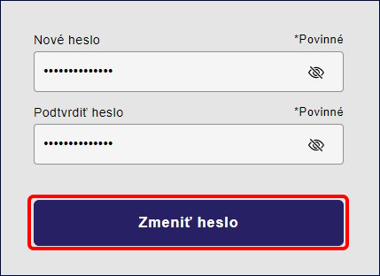
Po úspešnom vytvorení hesla klikneme na tlačidlo Prejsť do aplikácie. Keď nás systém presmeruje do aplikácie, vždy si musíme byť istí, že pracujeme na stránke www.is.planobnovy.sk.
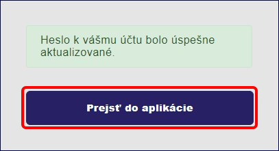
1.2) Prihlásenie na neverejnú časť ISPO
1.2.1) Pre prihlásenie na neverejnú časť ISPO na stránke www.is.planobnovy.sk napíšeme do poľa Prihlasovacie meno alebo e-mail e-mailovú adresu, ktorú sme uviedli pri registrácii a na ktorú sme obdržali e-mail na vytvorenie hesla. Do poľa Heslo uvedieme rovnaké heslo, ktoré sme si vytvorili a klikneme na tlačidlo Prihlásiť sa.
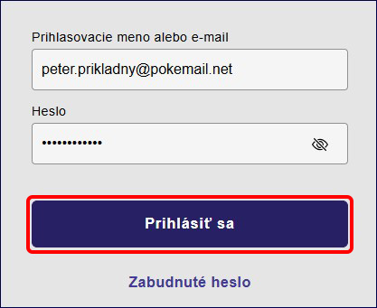
1.2.2) V prípade, že sme zabudli svoje heslo, klikneme na tlačidlo Zabudnuté heslo.
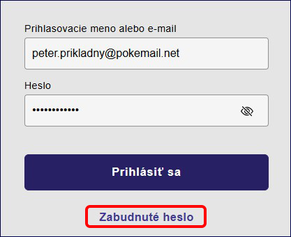
Následne uvedieme do poľa Prihlasovacie meno alebo e-mail tú e-mailovú adresu, ktorú sme uviedli pri registrácii a klikneme na tlačidlo Odoslať.
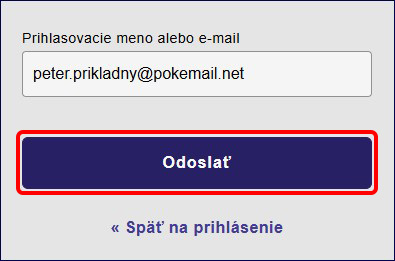
Po obdržaní e-mailu na vytvorenie hesla postupujeme podľa bodu 1.1.6). V prípade, že sme e-mail na zmenu hesla neobdržali do jednej minúty, skontrolujeme záložku spam a nevyžiadanú poštu. Ak sa e-mail nenachádza ani tu, kontaktujeme Centrum podpory ISPO.
1.2.3) Po úspešnom prihlásení na neverejnú časť ISPO vyberieme orgán, pod ktorým chceme pracovať a klikneme na tlačidlo Vybrať.
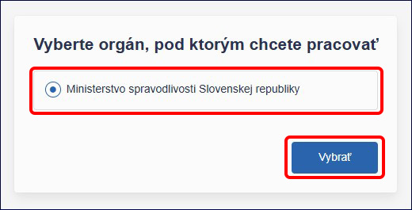
Poznámka: Zamestnanci, ktorí majú pracovný pomer s dvoma alebo viacerými orgánmi štátnej moci, môžu mať po prihlásení sa na výber viac ako jeden orgán. V takom prípade vyberáme práve ten, pod ktorým chceme aktuálne pracovať.
1.2.4) Po prihlásení a výbere orgánu vidíme základnú obrazovku neverejnej časti ISPO, ktorá je rozdelená na ľavé navigačné menu, ktoré nám pomáha k lepšej orientácii v systéme a na hlavnú pracovnú časť, v ktorej môžeme vykonávať konkrétne akcie.
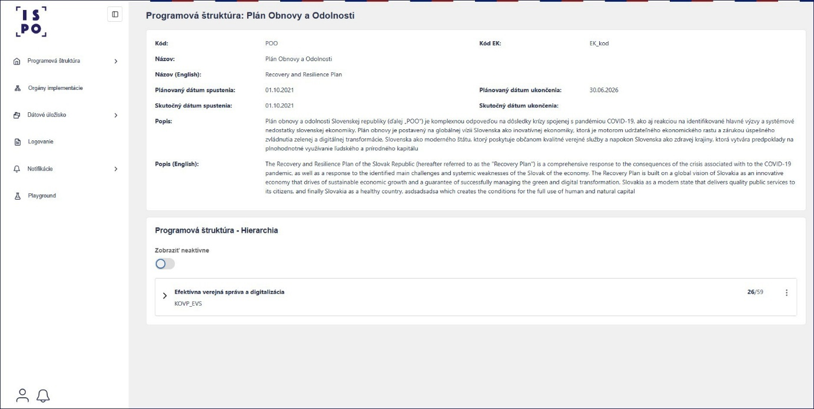
Aktuálny počet položiek v navigačnom menu je len základné zobrazenie pre nového používateľa s pracovnou pozíciou Zamestnanec VIR. Na to aby sme mohli v systéme vykonávať prácu, ktorou sme poverení, potrebujeme kontaktovať pracovníka s pracovnou pozíciou Admin VIR, ktorý nám podľa podkapitoly 2.1) pridelí pracovné pozície, opísané v kapitole 2).
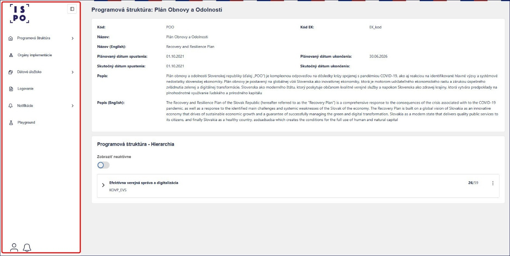
Pomocou tlačidla Štvorček v hornej časti navigačného menu môžeme rozšíriť hlavnú pracovnú časť obrazovky.
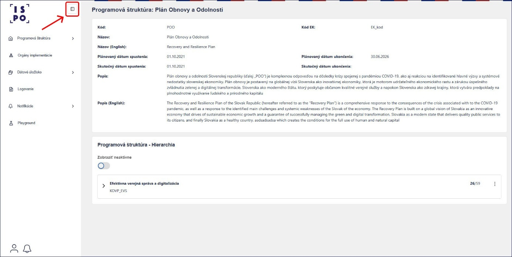
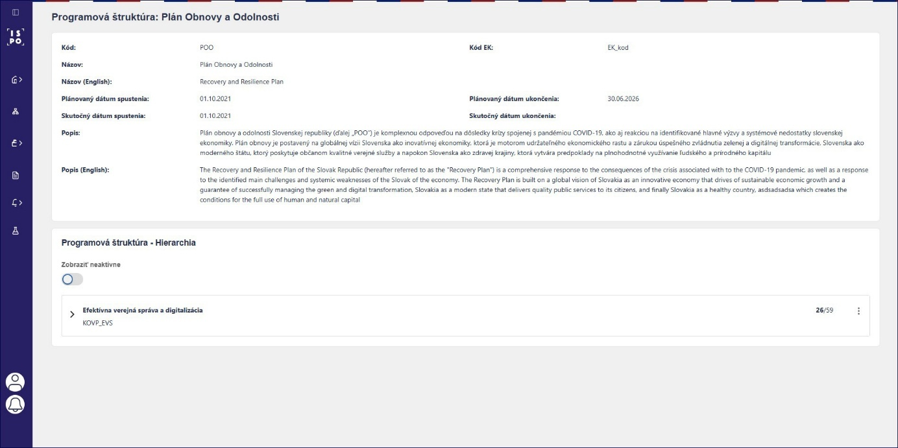
1.3) Logovanie a notifikácie na neverejnej časti ISPO
1.3.1) Súčasťou systému ISPO je aj zaznamenávanie jednotlivých krokov a akcií používateľa v systéme, ďalej len logovanie, ktoré nám pomáha v prípade, ak potrebujeme dohľadať informácie o tom, v ktorý deň a v akom čase sme vykonali konkrétnu akciu.

1.3.2) Súčasťou systému ISPO sú aj notifikácie, ktoré dostávame do zvončeka v spodnej časti navigačného menu a na používateľskú e-mailovú adresu.
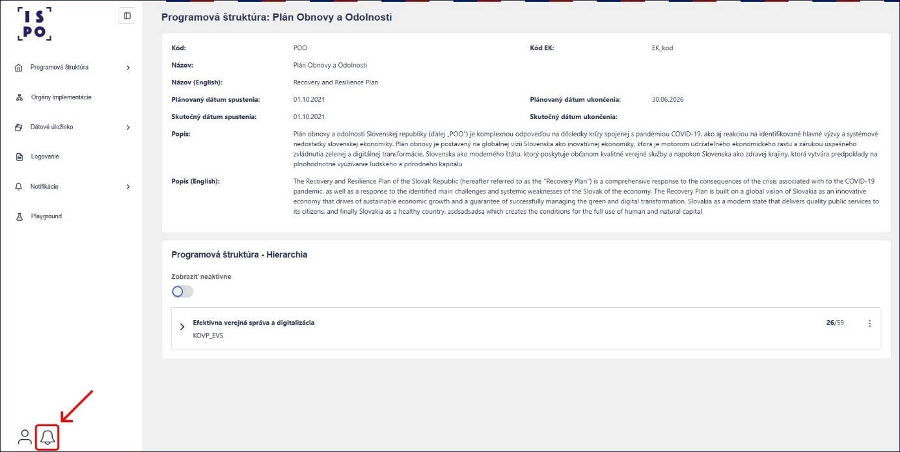
To, aký typ a spôsob notifikácií dostávame, si vieme nastaviť v sekcii Notifikácie v navigačnom paneli v časti Konfigurácia notifikácií. Základné nastavenie notifikácií je pre všetky evidencie do zvončeka aj na e-mailovú adresu. V prípade, že chceme toto nastavenie zmeniť, klikneme na tlačidlo Konfigurovať.
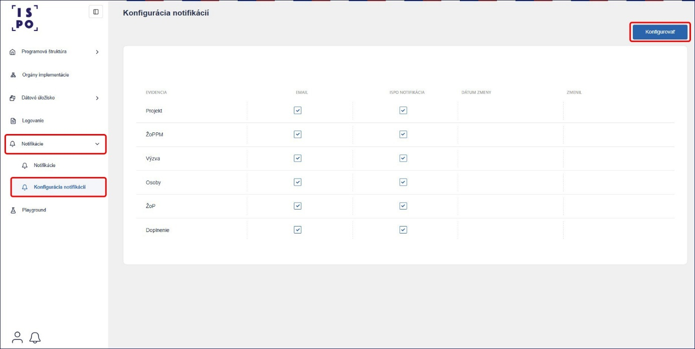
Ak chceme dostávať notifikácie a e-mail z jednotlivých evidencií, ponecháme zaškrtávacie políčka zaškrtnuté. Ak ich nechceme dostávať, zaškrtávacie políčka necháme prázdne. Klikneme na tlačidlo Uložiť.
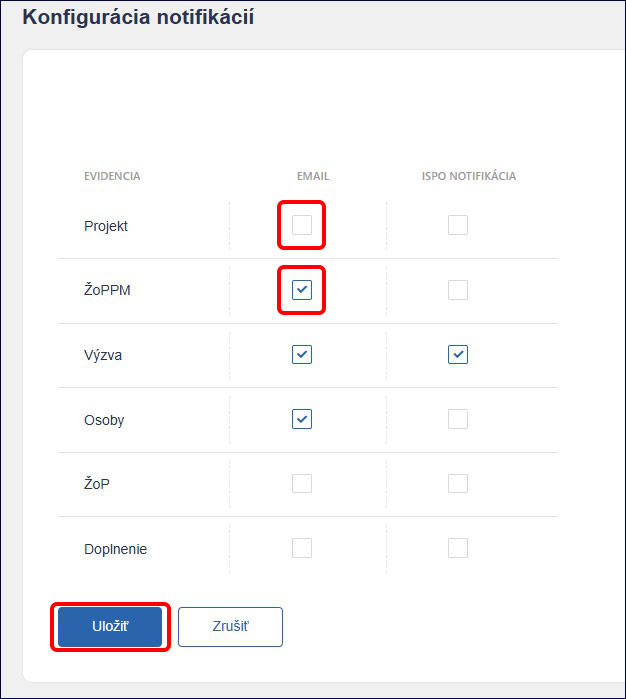
Poznámka: V prípade, že si zvolíme niektorú z evidencií, napríklad Výzvu, neznamená to, že budeme dostávať notifikácie o všetkých výzvach daného vykonávateľa. Znamená to, že ak máme pridelenú niektorú z pracovných pozícií podľa kapitoly 2) týkajúcich sa výziev, budeme dostávať notifikácie o konkrétnych výzvach, na ktorých pracujeme.